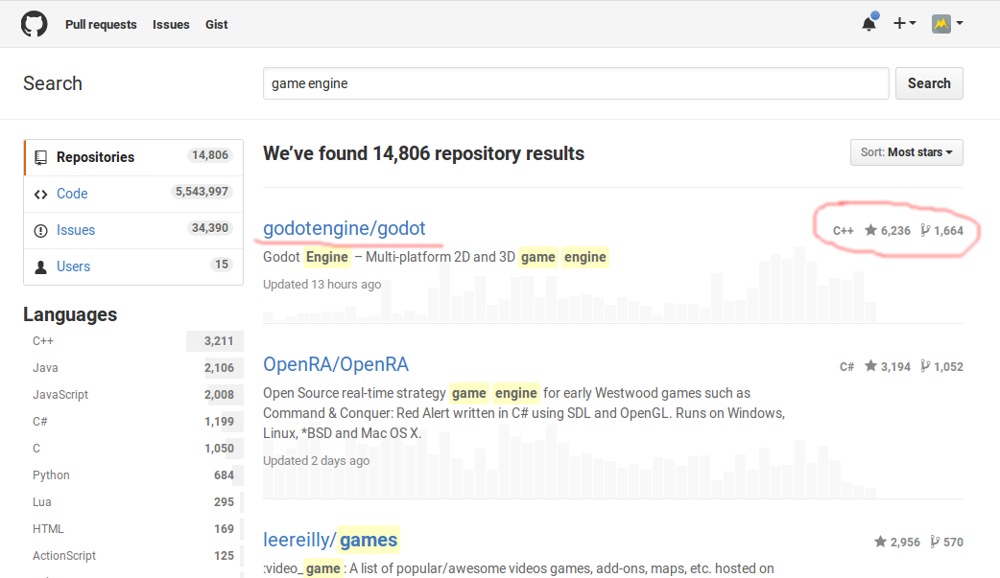
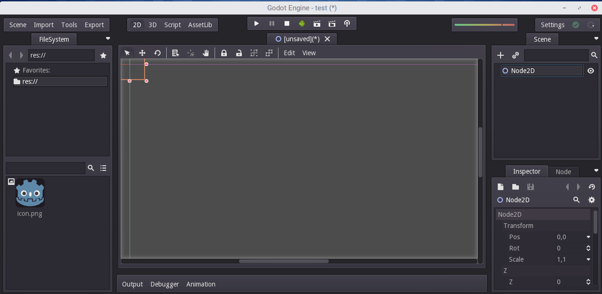
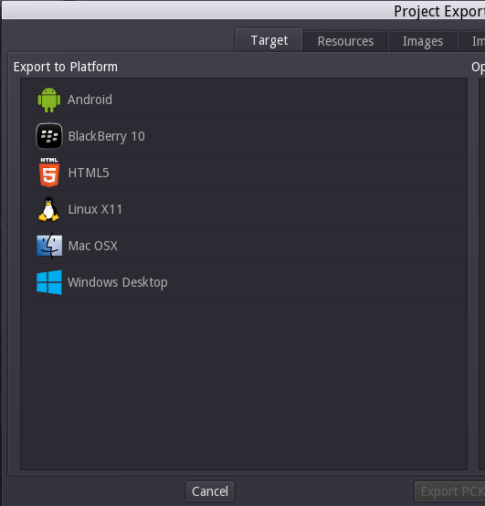
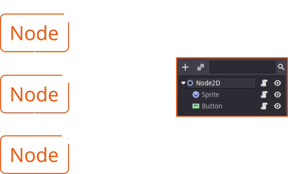
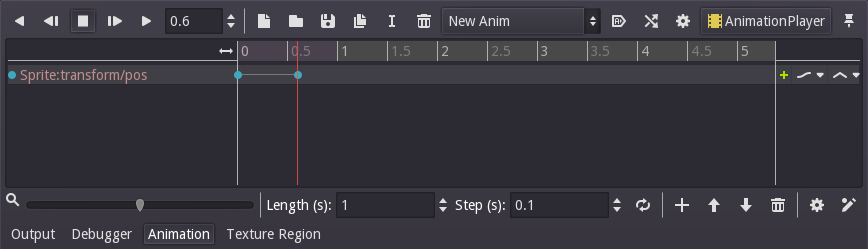

Godot Engine
for Mobile App Prototyping
Mark Joseph J. Solidarios
Use the navigation buttons or the arrow keys to proceed to the remaining slides.
F
You can also press > >F < < on your keyboard to show your presentation in full-screen mode.
This presentation is best explored with up-to-date web browsers.
What is Godot?
Godot is an open source game engine developed by the community. It uses a node-based system to create games - optimized by scripts for added functionality.
Why use it for mobile app prototyping?
We can quickly create interactive apps with this engine. It's node-based system enables us to quickly add our designs.
We were also able to publish student's app prototype in Google Play Store with this engine because of its multi-platform capabilities.
Godot is currently on the first position among the top open source game engines on GitHub.
GUI
Godot's Interface. Godot can create 2D and 3D games.
X Platform
Godot projects can be exported across multiple platforms (Desktop, Mobile, Web).
Basic Concepts
Nodes
Nodes
A node is a basic element for creating a game, it has the following characteristics...
Node
- Has a name.
- Has editable properties.
- Can receive a callback to process every frame.
- Can be extended (to have more functions).
- Can be added to other nodes as children.
Nodes in a Tree
Typical node structure: A node can have one or more child nodes. When arranged in this way, the nodes become a tree.
In Godot, the ability to arrange nodes in this way creates a powerful tool for organizing the projects. Since different nodes have different functions, combining them allows to create more complex functions.
Instancing
Having a scene and throwing nodes into it might work for small projects, but as a project grows, more and more nodes are used and it can quickly become unmanageable. To solve this, Godot allows a project to be separated in several scenes.
In Godot, a scene can be created and saved to disk. As many scenes can be created and saved as desired.
In this example, Scene B was added to Scene A as an instance.
Scripting
A script basically adds a behavior to a node. It is used to control the node functions as well as other nodes (children, parent, siblings, etc). Godot use its own scripting language (GDScript).
To learn more about GDScript, please visit the official documentation.
Scripts can be added to individual nodes.
Animation
Godot can also handle animations without minding the complexity of animation programming.
To add an animation to your project, you need an AnimationPlayer node.
Editing Animations
Animations are edited in the animation panel. Each animation property is controlled by an animation keyframe represented by the blue circles in the timeline.
Mobile App Prototyping
Exercise instructions will be discussed by your instructor.
Thank You!
This presentation is made of and HTML 5